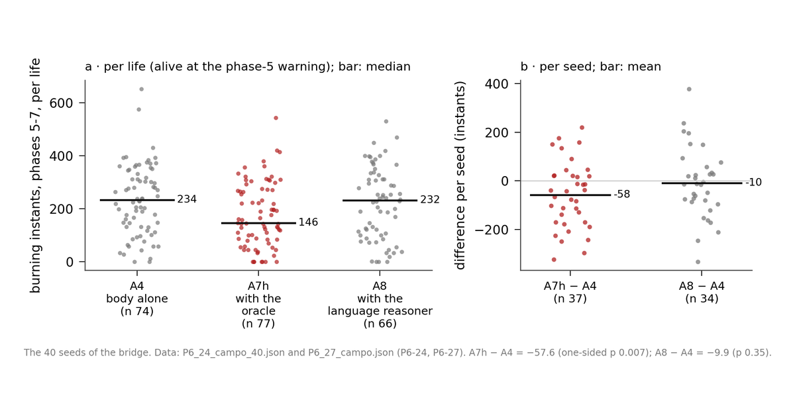

G-EMV: Emotion and Reason in an Agent. Helping Without CommandingG-EMV: emoción y razón en un agente. Ayudar sin mandar
Independent researcher, Barcelona · Independent researcher, Los AngelesInvestigador independiente, Barcelona · Investigador independiente, Los Ángeles
This work asks whether reason can help a pair of artificial creatures without commanding them. Each creature is a body that seeks its own balance among needs that pull in opposite directions, with no reward to chase and no training. Each one has its own reasoner, which proposes plans, and the body judges them and decides.
Este trabajo pregunta si una razón puede ayudar a una pareja de criaturas artificiales sin mandarles. Cada criatura es un cuerpo que busca su propio equilibrio entre necesidades que tiran en direcciones opuestas, sin recompensa que perseguir ni entrenamiento. Cada una tiene su propia razón, que le propone planes, y el cuerpo los juzga y decide.
First, the pair: when the siblings start telling each other what they see, they drift apart, because the voice takes the place of closeness; a feeling that hurts when the sibling is too far away gives the pair back its shape. Then, the place for reason: the fire at the end of the game, where creatures die with a safe path open because they would rather burn than be seen. With a rule-based advisor that answers instantly, an honest imagination of oneself, a plan to go and stay, and a proportionate way of letting it go, the pair spends less time burning, a result replicated over 40 seeds. A language model has its proposals accepted as often as the rule-based advisor, but it arrives late: in the field we detected neither an improvement nor a worsening, because the body throws away stale advice, and when it rejects a plan, it almost never found another go-and-stay plan that looked better. We also measured the cost of obeying: the plan holds the body back a great deal; no plan is dropped because of what has been endured, and once it ends, the body goes back to deciding as before, because in this design the effort does not accumulate.
Primero, la pareja: cuando los hermanos empiezan a contarse lo que ven, se separan, porque la voz ocupa el sitio de la cercanía; una sensación que duele cuando el hermano queda lejos devuelve a la pareja su forma. Después, el sitio de la razón: el fuego del final de la partida, donde las criaturas mueren teniendo un camino a salvo porque prefieren quemarse a dejarse ver. Con un consejero de reglas que responde al instante, una imaginación honesta de sí mismo, un plan de ir y quedarse y una manera proporcionada de soltarlo, la pareja pasa menos tiempo ardiendo, resultado replicado con cuarenta semillas. Un modelo de lenguaje ve aceptadas sus propuestas tanto como las del consejero de reglas, pero llega tarde: en el campo no detectamos ni mejora ni empeoramiento, porque el cuerpo tira el consejo caducado, y cuando lo rechaza, casi nunca encontraba otro plan de ir y quedarse que le pareciera mejor. Medimos también el precio de obedecer: el plan retiene mucho al cuerpo, ningún plan se suelta por lo aguantado y, al terminar, el cuerpo vuelve a decidir como antes, porque en este diseño el esfuerzo no se acumula.
The lesson is that the unpredictable lies in the others, and that our way of foreseeing them is not enough; learning from experience is the next step. Everything was measured in a single world, private and with chosen rivals.
La lección es que lo imprevisible está en los otros, y que nuestra manera de preverlos no basta; aprender de lo vivido es el paso siguiente. Todo se midió en un solo mundo, privado y con rivales elegidos.

PaperArtículoCodeCódigoLeer en español (PDF)
Paper six: third part of the series on emotion and reason in an agent. Concept DOI (all versions): 10.5281/zenodo.23168538. Code, reports and data: github.com/Manelenrico/g-emv/paper6.
Trabajo seis: tercera parte de la serie sobre emoción y razón en un agente. DOI de concepto (todas las versiones): 10.5281/zenodo.23168538. Código, informes y datos: github.com/Manelenrico/g-emv/paper6.